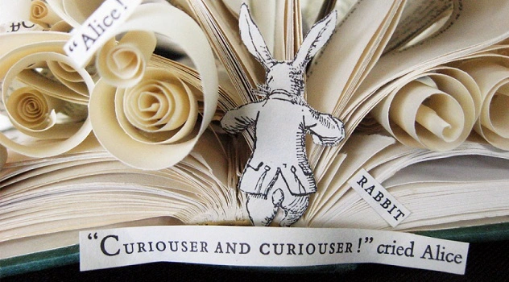

Dezembro de 2022
Na toca do coelho.

C, C++, Python, HTML, CSS, JavaScript, SGBD, SQL... Puxa! Quantas
palavras novas! Mas da mesma maneira que ela entrou na faculdade de
engenharia e aprendeu a gostar da física que, no colégio, não
compreendia, ela agora se empenha aprendendo (finalmente!) a
programar. Quem diria?! Ela, com certeza, não.
"Entrega teus caminhos ao Senhor, confia nele, e o mais ele fará. Fará
sobressair a tua justiça como a luz e o teu direito, como o sol ao
meio-dia. Descansa no Senhor e espera nele, não te irrites por causa
do homem que prospera em seu caminho, por causa do que leva a cabo os
seus maus desígnios."
Salmos 37:5-7